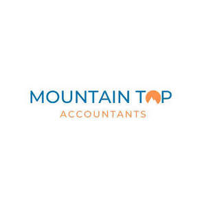

Trade Mark Journal No.2025/011 14 March 2025
UK00004167092 28 February 2025 (35)

- Class 35
- Accountancy; Tax consultancy [accountancy]; Book-keeping and accounting; Taxation [accountancy] consultancy; Tax advice [accountancy]; Tax consultations [accountancy]; Tax planning [accountancy]; Taxation [accountancy] advice; Accounting; Taxation [accountancy] consultation; Book-keeping and accounting services; Computerised accounting; Accountancy services; Accountancy, book keeping and auditing; Consultancy relating to tax accounting; Forensic accounting services; Bookkeeping; Business consultancy to firms; Computerised tax assessments (preparation of -) [accounting]; Tax return advisory [accountancy] services; Accounting consultancy relating to taxation; Business accounting advisory services; Management accounting; Accounting, in particular book-keeping; Business management of professional athletes; Accountancy advice relating to taxation; Business management of entertainers; Computerised accounting (Preparation of -); Accounting services; Business management of musicians; Book-keeping; Accountancy advice relating to tax preparation; Administrative accounting; Consultancy (Professional business -); Professional business consultancy; Business consultancy (Professional -); Computerized accounting services; Business advice relating to accounting; Professional business consulting; Accounting advisory services; Management of business offices for others; Accounting services relating to tax planning; Administration of business payroll for others; Accountancy advice relating to the preparation of tax returns; Business consultancy to individuals; Computerised book-keeping; Professional consultancy relating to personnel management; Corporate management consultancy; Professional consultancy relating to business management; Business appraisal consultancy; Business organisation consulting; Professional business consultancy services; Business organisation and management consulting; Business consulting for enterprises; Cost management accounting; Business organisation and management consultancy in the field of personnel management; Evaluations relating to business management in professional enterprises; Personnel management consulting; Business management consultancy in the field of corporate travel; Corporate management consultancy services; Cost accounting; Management consultancy (Personnel -); Advisory services (Business -) relating to the management of public sector businesses; Business accounts management; Business management consulting; Business organisation and management consulting services; Computerised payroll preparation; Business appraisals; Appraisals (Business -); Business management and consulting; Business management and organisation consultancy; Business management organisation consultancy; Business organisation and management consultancy; Company office secretarial services; Professional business consultations; Management assistance to commercial firms; Business consulting; Outsourced administrative management for companies; Accounting services for mergers and acquisitions; Payroll advisory services.
Mountain Top Accountants Limited